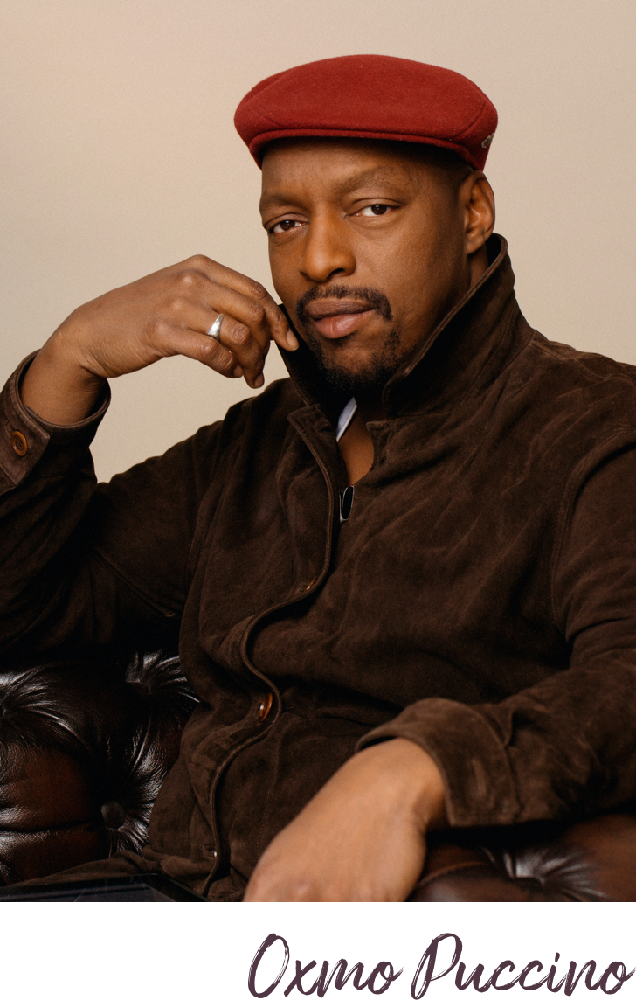

Tendrement
Oxmo Puccino
Oxmo Puccino
s’engage pour la Journée internationale des droits des femmes du 8 mars 2020 en offrant sa nouvelle chanson «Tendrement» disponible dès maintenant.
100% des revenus générés sont reversés à l'association
La Maison Des Femmes
La Maison Des Femmes
Le clip vidéo officiel
Sortie sur Youtube dans
10 h. 30 min. et 4 sec.
Réalisé par
Annissa Bonnefont
Pour porter haut et fort le message de l’association, Anissa Bonnefont a réalisé gracieusement le clip de cet hymne. Une jolie façon pour elle, en tant que pacifiste, de mener cette révolution nécessaire, main dans la main avec les hommes.
Le sujet féminin a toujours été présent dans mes textes.
Dans une époque où les divisions sont multiples, j’ai eu envie d’écrire une ode à nos mères, nos femmes et nos filles.

Particulièrement sensible à cette cause, la figure incontournable du rap français offre cette déclaration d’amour à toutes les femmes, en reversant l’intégralité des revenus générés par sa nouvelle chanson « Tendrement » à l’association La Maison des femmes.
Partager les paroles

Une maison, à Saint-Denis, pour accueillir toutes les femmes vulnérables ou victimes de violence.
Sensibilisée aux difficultés que rencontrent les femmes à différents moments de leur vie, l’équipe médicale et soignante de la maternité du CHU de Saint-Denis a créé un lieu d’accueil et d’orientation pour toutes les femmes victimes de violences, quelle qu’en soit la nature.
Elle est organisée en 3 unités : une unité de prise en charge des mutilations sexuelles, une unité de prise en charge des violences conjugales, intra-familiales et sexuelles, et un centre de planification familiale.
La Maison des femmes accueille toujours plus de femmes, parfois accompagnées de leurs enfants.
Elle a donc besoin de soutien pour lever des fonds et remplir un triple objectif : pérenniser son mode de fonctionnement, augmenter sa capacité d’accueil et dupliquer le modèle dans d’autres villes.
Elle est organisée en 3 unités : une unité de prise en charge des mutilations sexuelles, une unité de prise en charge des violences conjugales, intra-familiales et sexuelles, et un centre de planification familiale.
La Maison des femmes accueille toujours plus de femmes, parfois accompagnées de leurs enfants.
Elle a donc besoin de soutien pour lever des fonds et remplir un triple objectif : pérenniser son mode de fonctionnement, augmenter sa capacité d’accueil et dupliquer le modèle dans d’autres villes.
Faire un don
Tendrement
Oxmo Puccino
Notre histoire est compliquée
Elle est culturelle de triste intensité
Elle est culturelle de triste intensité
Écrasée par les contradictions
À mi-chemin entre demain et les traditions
À mi-chemin entre demain et les traditions
À part les exceptions, les autres sont victimes
Les hommes bons, ce n’est pas que dans les films
Les hommes bons, ce n’est pas que dans les films
On n’a pas tous les mains qui traînent,
je l’ai dit à ma fille
Et si ça t’arrive, il faut qu’ils comprennent
je l’ai dit à ma fille
Et si ça t’arrive, il faut qu’ils comprennent
Certains font de leur mieux,
tu sais que j’existe Je me
battrai jusqu’à ce que ça suffise
tu sais que j’existe Je me
battrai jusqu’à ce que ça suffise
Seul on touche aucune prouesse
Derrière un grand homme,
il y a toujours une Déesse
Derrière un grand homme,
il y a toujours une Déesse
Entre nos femmes, nos filles et nos mères
Chaque jour la vie éphémère J’ai envie de dire
Qu’on vous aime
Chaque jour la vie éphémère J’ai envie de dire
Qu’on vous aime
Dans le monde on n’est pas tous au même siècle
La Victoire s’est toute libérée des mêmes règles
La Victoire s’est toute libérée des mêmes règles
Des milliers d’années, de chemins de croix
Si difficile qu’on fête vos droits
Si difficile qu’on fête vos droits
Maintenant c’est partir ou être libre
Peut-être rester et tenter de vivre
Peut-être rester et tenter de vivre
Quelque chose Avoir ce qu’on veut n’est pas facile
Tu prends le pouvoir mais restes fragile
Tu prends le pouvoir mais restes fragile
Les Hommes sont durs mais, et, la Société ?
Comment rester pure ? Qui va t’y aider ?
Comment rester pure ? Qui va t’y aider ?
Entre nos femmes, nos filles et nos mères
Chaque jour la vie éphémère J’ai envie de dire
Qu’on vous aime
Chaque jour la vie éphémère J’ai envie de dire
Qu’on vous aime
Enregistrez l'image qui correspond au format de votre réseau social et partagez-la en ligne.
N'oubliez pas le hashtag #tendrement.